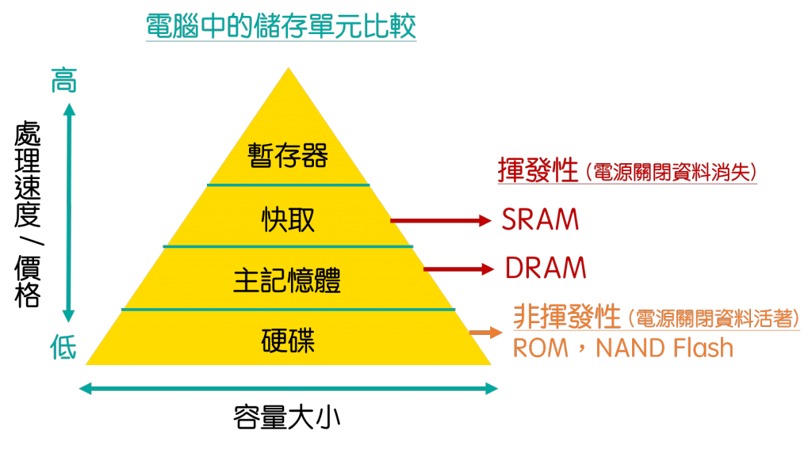

電腦五大單元
輸入 / 輸出 / 控制 / ALU / 記憶
🎯 學習目標
- 用生活比喻理解電腦「輸入 → 運算 → 輸出」的運作
- 認識電腦五大單元各自負責什麼工作
- 知道 CPU 是什麼，以及哪些因素會影響它的快慢
01電腦怎麼運作？用「一家餐廳」來想
電腦做任何事，都逃不出三個步驟：輸入 → 運算 → 輸出。這其實跟一家餐廳出餐的流程一模一樣：
🍜 餐廳流程
客人點餐（輸入）→ 廚房做菜（運算）→ 把菜端上桌（輸出）
電腦裡負責這整個流程的，就是接下來要介紹的五大單元。
02電腦的五大單元（配餐廳比喻）
把電腦想成一家餐廳，五大單元就是餐廳裡的五種角色：
| 五大單元 | 餐廳裡的角色 | 負責什麼 | 實際例子 |
|---|---|---|---|
| ⌨️ 輸入單元 | 點餐服務生 | 接收外面來的資料與指令 | 鍵盤、滑鼠 |
| 💾 記憶單元 | 冰箱／倉庫 | 暫時存放要處理的資料與半成品 | 記憶體 RAM |
| 🧠 控制單元 | 店長 | 指揮大家：誰先做、做什麼 | 在 CPU 裡 |
| 🧮 算術邏輯單元 | 廚師 | 真正動手「運算」（加減乘除、判斷） | |
| 🖥️ 輸出單元 | 上菜 | 把做好的結果送出來給人看 | 螢幕、印表機、喇叭 |
🧩 CPU 就是「廚房」
其中控制單元（店長）＋ 算術邏輯單元（廚師）合在一起，就是電腦的大腦——CPU（中央處理器）。所以買電腦時 CPU 好不好，影響很大。
03CPU 的快慢看什麼？
同樣是「廚房」，有的出餐快、有的出餐慢。CPU 的快慢主要看三件事：
⏱️ 時脈（速度）
廚師手腳多快。單位是 GHz，數字越大、每秒能做的事越多。
👥 核心數
有幾個廚師同時做菜。核心越多，越能一次處理多件事（多工）。
⚡ 快取記憶體
廚師手邊的小備料檯。快取越大，越不用一直跑遠去倉庫拿東西。
🔎 想更深入（可略過）
CPU 每做一個指令，其實會經過「擷取 → 解碼 → 執行 → 儲存」四個小步驟（合稱一個機器週期）。這部分是進階內容，先知道「CPU 一步步照指令做事」就夠了。
04資料放哪裡？儲存單元金字塔
電腦裡存放資料的地方不只一種，它們像金字塔一樣分層：越上面越快、越貴、容量越小；越下面越慢、越便宜、容量越大。
另外要記得：暫存器、快取、主記憶體是揮發性（一斷電資料就不見），硬碟／SSD 是非揮發性（斷電資料還在）——這也是為什麼打字要記得存檔！

✏️ 課堂練習
- 電腦做任何事都包含哪三個步驟？
- 用餐廳比喻：負責「運算（做菜）」的是哪個單元？負責「指揮」的又是哪個？
- CPU 是由哪兩個單元合起來的？
- 其他條件相同時，時脈 3.5 GHz 與 2.0 GHz 的 CPU 哪個比較快？
- 為什麼打字打到一半突然停電，沒存檔的內容會不見？（提示：揮發性）
▶ 顯示解答
- 輸入 → 運算 → 輸出。
- 做菜（運算）＝算術邏輯單元（廚師）；指揮＝控制單元（店長）。
- 控制單元 ＋ 算術邏輯單元。
- 3.5 GHz 較快（時脈較高）。
- 因為打字的內容暫時放在「記憶體（RAM）」，它是揮發性的，一斷電就消失；存檔是把它寫進非揮發性的硬碟／SSD。